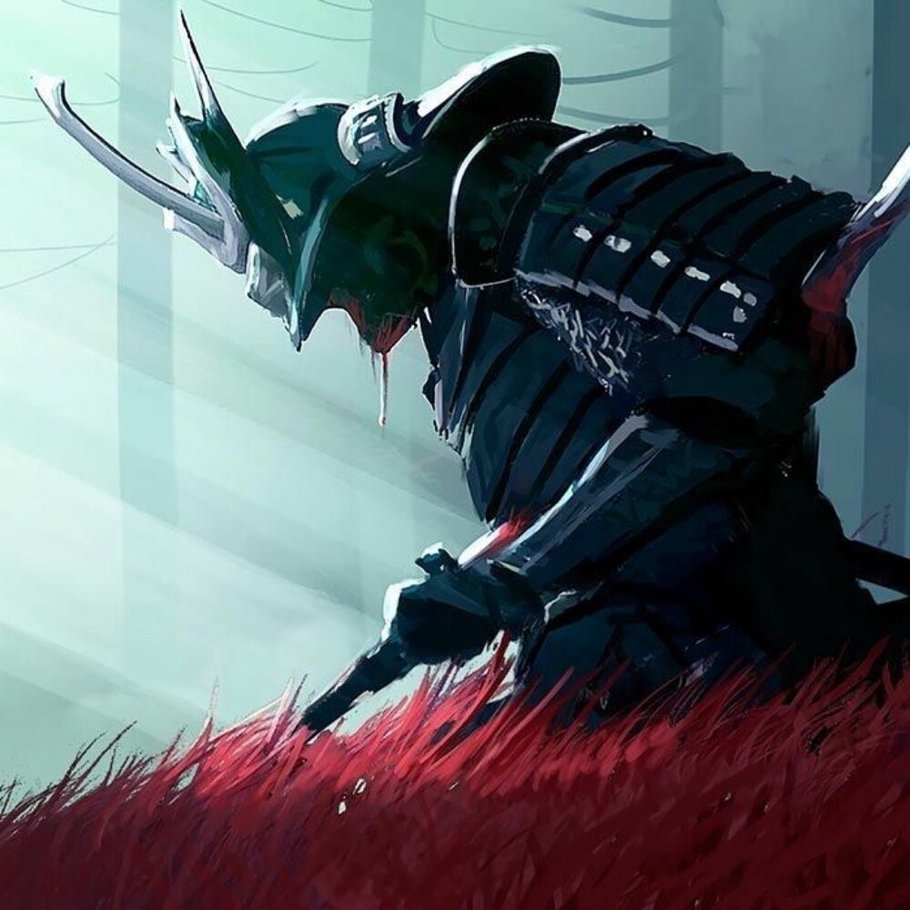

私について ・ Обо мне

Меня зовут Иван. Я прошёл долгий путь — 13 лет на льду хоккейной площадки закалили мой характер. Теперь я осваиваю новый лёд — лёд веб-разработки и геймдева.
Много путешествовал с друзьями и своей девушкой — видел разные культуры, и именно Япония вдохновила меня на эту страницу.
Моя большая мечта — написать крупную AAA-игру, которая расскажет миру свою историю.
趣味 ・ Увлечения
- 🏒 Хоккей (13 лет на льду)
- ✈️ Путешествия с друзьями и девушкой
- 🎮 Разработка игр и геймдизайн
- 🏯 Культура и архитектура Японии
数字当て ・ Угадай число
Я загадал целое число от 1 до 100. Попробуй угадать моё любимое число!
Попыток: 0